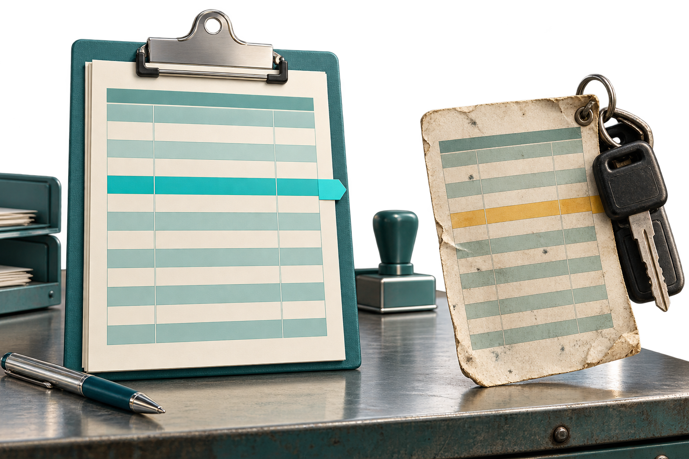

New plan sent.Old plan still in use.
A revised pickup means little if thetransporter hasn't confirmed it.
ART follows the handoff through toacknowledgment and action, keepingthe unresolved step open.

A revised pickup means little if thetransporter hasn't confirmed it.
ART follows the handoff through toacknowledgment and action, keepingthe unresolved step open.
